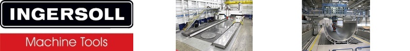

- Leadership
- Strategy
- Relationships
- Influencing
- Communication
- Decision Making
- Improvement
- Problem Solving
- Customer Focus
- Team Building
- Automation
- Goal Setting
- Analytics
- ITIL
- Change
Areas of Expertise
Skills
- Conceptual:
- Process Improvement
- Project Management
- IT Strategy
- Project Planning
- Business Process Improvement
- Integration
- Information Security
- IT Service Management
- Infrastructure
- Disaster Recovery
- Networking
- Influence Others
- IT Management
- Relationship Building
- Continuous Improvement
- Business Continuity
- Decision Making
- Problem Solving
- Agile Methodologies
- Practice:
- Systems Engineering
- Team Leadership
- Engineering
- Software Documentation
- Management
- Risk Management
- Team Leadership
- Technical Support
- Engineering Management
- Configuration Management
- Testing
- Requirements Management
- IT Operations
- Communication
- Root Cause Analysis
- Incident Management
- Budgeting
- Program Management
- Team Building Facilitation
- Technology -
- Firewalls
- System Administration
- Servers
- Network Administration
- Virtualization
- Enterprise Architecture
2022 March – Present – ThriveDX: Director – Information Technology –
Own and continuously improve processes and performance of technology teams. Identify and implement products to increase core effectiveness, reduce cost, and consolidate overlapping capability. Drive efficiency by hiring and retaining talent, training, and automation of key systems and processes. Optimize and scale capability in B2B and B2C solutions, supporting business delivery of audio and video learning programs to business and learners. Define and implement policies and processes which deliver business vision and contribute to a secure ecosystem.- Implemented capacity metrics to understand the workload, project capacity and generate a hiring indicator.
- Hired 3 people to get capacity in order and begin pushing projects forward.
- Developed a vision and initial roadmap for the IT teams and prioritized projects
- Implemented policies for admin access, account maintenance, onboarding, offboarding, password management, access reviews, patching, data retention, data cleanup, software, asset, and license tracking.
- Prioritized security hardening of tenants and documentation initiative to reduce tech debt.
- Implemented cross-training in the teams to begin breaking down traditional siloed work and improve coverage.
- Teams achieved 4.98 out of 5 NPS.
- Deployed SSO across the US organization, improving the onboarding and offboarding processes, and decreasing the likelihood of missing account activations or deactivations in specific solutions.
- Automated employee onboarding, offboarding, and auditing by introducing Ansible to the company.
- Developed RBAC model to implement with user provisioning and improve SOC II compliance.
- Automated SOX controls for auditing, disabling inactive users, and password security.
- Consolidated tools and platforms, implementing a billing model for departments and subsidiaries.
- Developed a machine learning model for the future ingestion of tickets to begin implementing guided solutions.
- Deployed unifying processes to span IT, Procurement, and Vendor operations for the deployment, recovery, and disposal of equipment which is aligned with Legal, Security, and Compliance requirements.
- Reduced recurring license cost for communication platforms by $600,000 per year.
- Integrated HRIS and AD platforms to streamline onboarding and offboarding processes and automate updates.
- Automated password & token rotation on key systems, improving overall security posture.
- Expanded automated onboarding and offboarding processes, leveraging RBAC model.
- Automated endpoint refresh process to minimize errors causing some endpoint to fail joining our environment.
- Automated license audits, cost control, and multiple self-help processes reducing support hours needed and allowing teams to focus on more complex issues.
2020 September – 2022 January – [deft]: Director – Engineering Operations –
Accountable for availability, resilience, and operational success of Internal, B2B, and B2C products and services through patching, automation of systems and processes, and monitoring strategy. Responsible for hiring, development and retention of reliability engineers, implementing internal growth models, and increasing effectiveness of teams by defining, tracking, reviewing, and reporting on Service Level Objectives (SLOs) and Key Performance Indicators (KPIs).- Delivered Onboarding and learning paths for new hires in LinkedIn Learning.
- Hired 5 new Support employees to close SPOF gaps and presented to ELT for 2021 additional growth.
- Designed and implemented a corporate tagging strategy to enable dynamic-linking and improve document lookup.
- Implemented simplified runbook architecture to improve outcome delivery of teams and enable new hires to deliver value during initial training.
- Agreed and implemented tagging strategy in monitoring systems – enabling automated runbook lookups within tickets and reduce MTTR.
- Developed strategy to achieve automation and streamline critical processes across support teams.
- Reduced noise by 68% through analysis, reporting, and promotion of documentation culture.
- Consulted on configuration and workflow creation for migration to ServiceNOW.
- Implemented priority matrices, internal/external SLAs, and processes to improve retention and resolution rates.
- Embedded team in development pipeline to reduce gaps in delivery and operationalization of products.
- Delivered Terraform automation to manage PagerDuty, enabling future goal of moving to personas for onboarding.
- Re-Branded team, implemented promotion paths, and tiered learning / certification to improve the talent pool, promote internal growth and personnel retention.
- Defined policies for Patch Management, PTO specific to 24/7 teams, Product Standardization and Consolidation.
- Developed multi-year strategy to realign team organization to industry and focus on key objectives to deliver corporate vision for growth, design, and supportability of systems, while mitigating threat vectors.
- Deployed patching strategy which realigned ailing systems with policy and removed security vulnerabilities.
- Implemented RCA governance and problem process to track and deliver improvements to products and services.
- Transitioned team from pure cost center into a revenue stream for partners and customers.
- Consulted with Knowledge and Learning team to solidify document structure and enable migration to ServiceNOW.
- Delivered automated method to identify critical CVEs which may impact the company, enabling early remediation.
2019 February – 2020 August – KAR Global: Senior Manager – Enterprise Operations –
Senior Leadership Team member, responsible for 24x7x365 design and delivery of monitoring and operational response at KAR Global; to include hiring, development, forecasting, budgeting, contract negotiation, vendor management, growth, and retention of North American and offshore teams; leading and defining ITIL / ITSM processes, the configuration and management of systems used to monitor internal and external customer applications and revenue generating architecture to deliver maximum uptime and revenue.- Migrated Event Management out of ServiceNOW, saving >$600k per year by removing the ITOM module.
- Reduced cost in 2019 by ~$200K and simplified architecture through consolidation of monitoring platforms.
- Enacted Automation-First culture within the onshore and offshore teams.
- Initial results: ~ 20% reduction in repetitive work and > 40% reduction in new solution deployment time.
- New culture continues to spark ideas and highlight areas for future improvement.
- Hired and implemented a development team to accelerate solution delivery.
- Decreased delivery time and increased customer satisfaction solidified new AppDev team in the company.
- Delivered framework by which monitoring of systems could be automated in the development pipeline – placing the configuration in the hands of the subject matter experts, and increasing the accuracy of monitoring.
- Partnered with Information Risk to improve monitoring and audit coverage of infrastructure, removing several gaps.
- Improved team-member retention of off-shore teams by changing WBS and empowering them to act.
- Built automation for process documentation of code to increase accuracy of runbook creation for teams.
- Developed and deployed standardized environment for idempotent automation build.
- Worked with vendors to deliver standard frameworks for monitoring, metrics capture, and API integration.
- Created analysis framework for causal and predictive models to iteratively increase operational stability.
- Worked with Governance team and automated security audits for multiple IT teams to increase compliance.
- New model audits near real-time and informs leaders of discrepancies, enabling immediate action.
- Configured and implemented PagerDuty, migrating on-call rotation for IT teams out of spreadsheets, and reducing mean-time to act (MTTA) from >15 minutes to less than 2 minutes.
- Developed Terraform and Ansible plays to deploy and maintain PagerDuty, reducing deployment time from 2 months to 8 hours and re-deploy time from 1 week to < 1 minute.
- Templated event rules in Terraform, enabling migration into development pipeline of applications.
- Implemented Splunk in the NOC and created several views which vastly increased observability of monitored systems and logged events, enabling application teams to isolate and resolve several key environmental issues.
2015 July – 2019 February – NetEnrich: Senior IT Operations Manager –
Leadership team member overseeing 37 multi-cultural leads and associates, across varying skillsets in Enterprise Operations Center (ECC / EOC / NOC) and Extended Team / MSO engagements for IaaS, SaaS, & PaaS, at KAR Auction Services & North Central Region clients, on-site and remote, to exceed business goals, SLA, OLA, and KPI targets. Lead continuous improvement, change, and operations initiatives to exceed 24*7*365 global operations and 99.5% availability. Engage with development teams to develop / deploy competitive solutions to SaaS platforms. Manage business relationship and influence engagement growth year on year. Responsible for Contract, OLA, SLA, and SOW, Vision, Analytics, Processes, and Implementation. Responsible for performance, team development, issue resolution, platform design advisement, and member management.- Re-architected monitoring to focus on Service Availability and Health to maximize revenue.
- Led engagement initiatives to deliver SolarWinds, OpsRamp, Splunk, and PagerDuty.
- Team delivered additional 38% alert noise reduction in Q1 of 2018 through analysis of Alert recovery time.
- On-demand health reports to proactively identify intermittent infrastructure issues and opportunities for threshold adjustment.
- Process to Alert association – 30% improvement across 22000 alerts.
- Identification and Analysis of trends – Identified 6 previously unknown capacity issues.
- Proactive identification – Addressed 14 defective core devices and 3 metric adjustments.
- Led change initiatives reducing Alert/Event noise >50%, Incident noise >20%, false positives > 15% in 2017.
- Delivered constraint based analysis and predictive analysis models to service and technology teams.
- Implemented cadence on tower and service analysis to identify continuous opportunities for improved performance
- Audit initiatives reduced 15 flawed process areas from >30% failure rate to less than 1%.
- Engaged by SaaS partner for micro service development methodology to help them improve their existing platform.
- Consulted on health scoring for Alert, Incident, Change, Problem, Dependency, and Connection for tie-in to predictive models and criticality automation - adopted by ServiceNow & OpsRamp for Probability models.
- Delivered predictive analysis, initially providing 80% accuracy on outages and 95% accuracy on hardware failures.
- Surpassed regional growth targets year on year and increased business engagements by 70% from 2015 to 2017.
- Deployed process and priority standardization, MTTR, MTBF, and KPI based workload analyses, enabling reduction of SLA metrics, elimination of backlog, and better reporting through ServiceNow performance analytics.
- Improved service 19% in 2015, additional 23% in 2016, First to Know (FTK) by 18%, resolve rate 10% with Single Pane of Glass (SPoG), ITSM changes, ITIL improvements, and >300 knowledge articles.
- Lowered total cost of ownership (TCO) by 3%, and improved SLTs through re-negotiation and service transition.
- Improved document management and audit processes, reducing error rate by more than 60%.
- Developed probability analyses of workload and services to enable transition to bi-modal IT operations, accurately forecast resource levels, and drive continued efficiency improvements with Incident, Request, and Change.
2007 June – 2015 July – Rolls-Royce: Regional IT Strategy and Delivery Manager –
Manage and facilitate business improvement, IT project delivery, and Solution Design Team deliverables in North America, South America, and Canada. Focal point for change, delivery issues and environment upgrades. Board approver for changes to business environment. Chair of Engineering IT engagement committee. Member of IT Executive group. Technical approver for Engineering IT renewals in US. Develop Engineering IT Strategy, Design, and high level roadmap annually.- Delivery of 64-bit OS project improved compute capability 80% in analytical community >2.4M yearly cost savings.
- Roadmap adopted globally for mobile device implementation.
- Improvements to management of 3.2M budget reduced spend by 1.2M for 43% efficiency improvement.
- Mitigated >$200M in cost by auditing sites being sold from Rolls-Royce to Siemens.
- Recognized for being crucial to the Phase I ADVENT win, due to 75% efficiency improvements in the Engineering Computational Development Laboratory; work completed in 1/4th the time.
- Oversaw project recovery and facilitation of deliverables – Recovered 4 month slip in outsourcing initiative.
- Changes to agile environment increased engineering efficiency by $900K per year.
- Deployed timekeeping on mobile devices to improve accountability and time tracking for CAPEX deliveries.
- Delivered Six Sigma project to improve renewal processes and budgeting accuracy.
- Led design and deployment of license analysis and auditing application, recovered >$800K in license cost.
- Consulted on decommissioning of failing document management system and migration into global database, minimizing risk and standardizing record keeping across region.
- Kaizen to improve management of compute resources reduced yearly cost by $14M annually.
- New cluster design increased efficiency of Ceramic Matrix Composite (CMC) lab; resulting in >30% improved performance of graphical and analytical capability, enabling vastly increased global competitiveness.
- Refactored existing “all-inclusive” bespoke applications to leverage common modules for streamlined code delivery.
- Modular design (micro-service) initiatives enabled 40% delivery improvement and reduced rework of bespoke code
- AppDev successfully delivered 27 .NET applications to customers with new design methodology.
- Implemented CI/CD with new architecture, allowing for near 100% availability of applications while deploying patches, and minimizing production “touches” to deliver capability across multi-tenant platforms.
- Led Trent 1000 CX war room design, allowing effective project progression toward milestones until strategic delivery, facilitating the move of the Trent CX work package to Indianapolis and securing 120 Full Time Equivalents (FTEs) of work to offset F136 program shutdown.
- Designed and delivered application security model for global engineering, receiving recognition from multiple leadership teams and stakeholders - satisfying GSC requirements and addressing constraints from GDPR, ITAR, PII, and HIPA for a global organization – design was so simple, yet robust, that it was used throughout my tenure.
- Leveraged by SAP group for ERP security and workflow enhancements to improve data integrity.
- Led large change initiative to upgrade 2400 engineers, and delivered three months ahead of schedule.
- Demonstrated extensive knowledge of PLM and an ability to simplify highly technical documents in the creation and presentation of material to senior management and Government Security Committee, inspiring compliments from Directors and Engineering Vice Presidents of Civil and Defense on ability to present very complex items in a simple, understandable manner.
- Chair of Engineering IT Working Group, charged with employing innovative technologies to overcome competition.
- Invited to join the North American IT Executive Group and Gas Turbine Supply Chain (GTSC) IT Strategy Board, representing Engineering & Technology interests for North America.
- Recognized by US IT Security Director for excellence in program communication, and Risk Management
- Implemented process improvements, reducing install time by 60%.
- Installed and configured a multi-switch managed fiber backbone, improving performance by 450% on legs and 1000% over trunks.
- Architected network cabling and switching infrastructure for higher availability of crucial servers and applications.
- Installed and configured Internet activity monitoring programs and network bandwidth usage and connectivity programs, greatly increasing data availability and problem identification methods.
- Diagnosed current data and hardware protection strategies and implemented improvements, increasing network uptime, server availability, and data recovery by over 30%.
- Configured an explicit firewall for maximum security, closing several security holes and improving network integrity.
- Implemented an IP based security camera system 2 months ahead of schedule, allowing for remote interface by managers and security personnel.
- Partnered with ERP group to implement SAP, identify requirements, implement infrastructure, and deploy.
- Architected dual-factor authentication VPN solution and secure file transfer server for remote data access by associates abroad.
